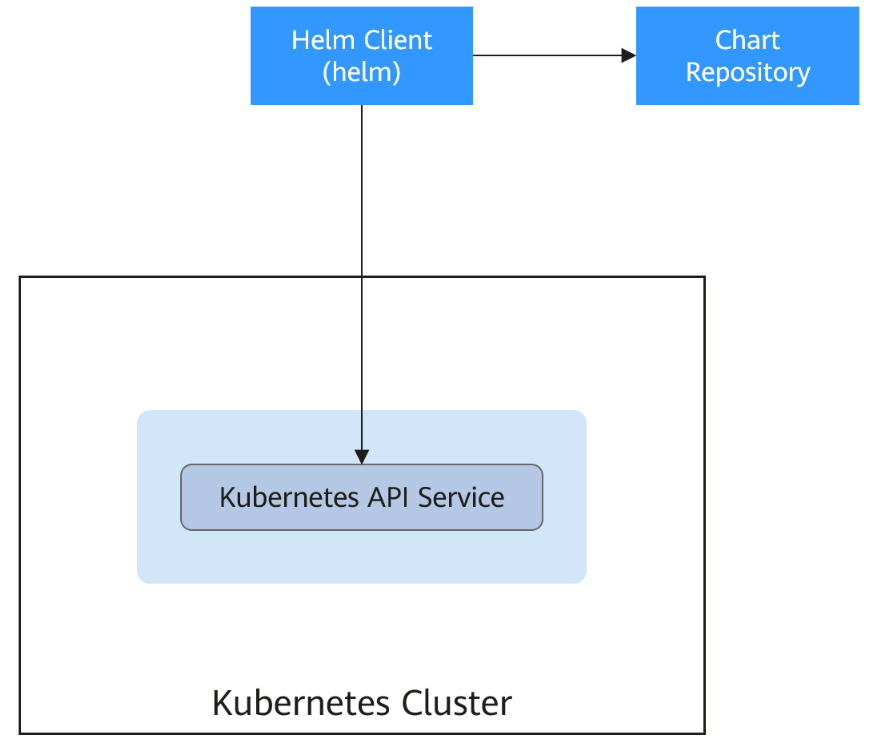
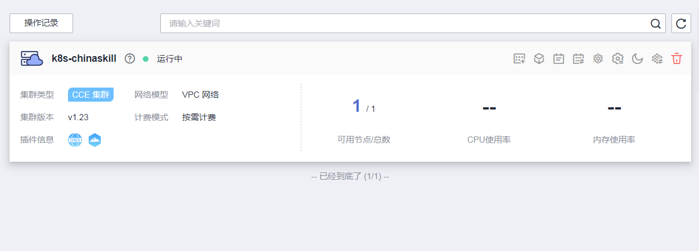
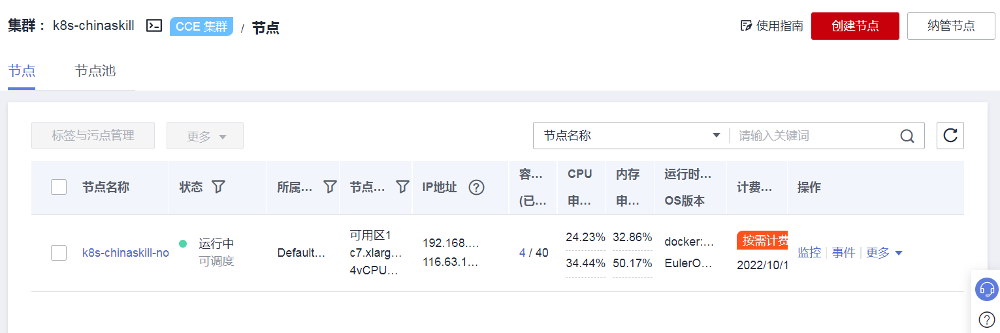
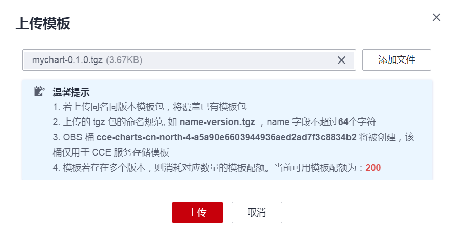
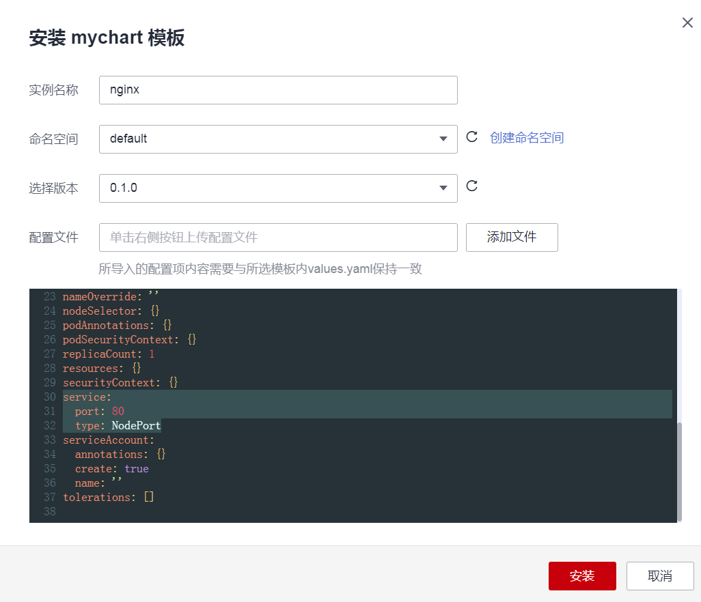
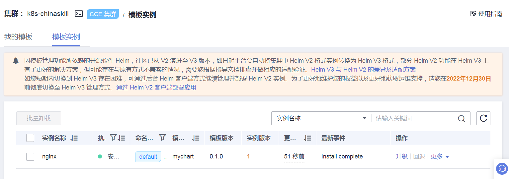
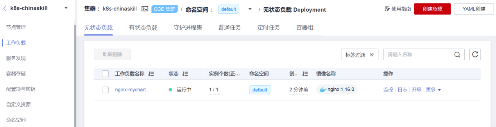
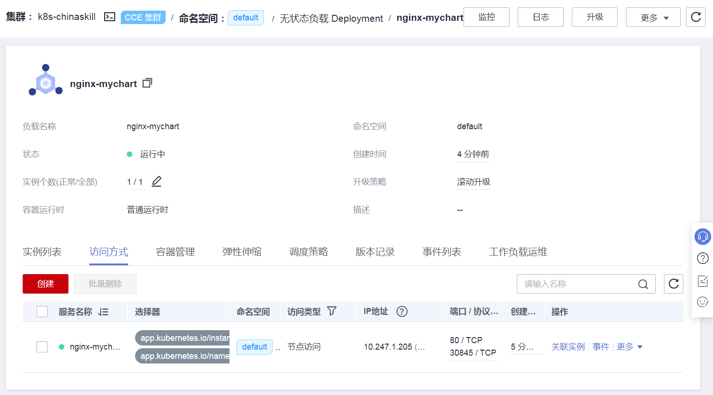
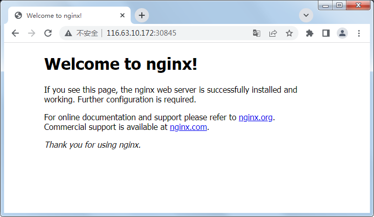

公有云：(4)公有云Helm模板使用案例
案例描述
本案例讲述如何在华为云公有云平台上的Kubernetes集群中通过Helm模板部署应用。
规划节点
节点规划见表1-1。
表1-1 节点规划
| IP | 主机名 | 节点 |
|---|---|---|
| 192.168.200.12 | k8s-chinaskill-node1 | K8s集群master控制节点 |
基础准备
准备华为云公有云平台账号，并充值金额，在华为云公有云平台上购买一个Kubernetes集群服务，购买单个master节点云服务器，给该云服务器绑定一个弹性公网EIP，在该Kubernetes集群服务中部署kubectl工具，并将该CCE集群的防火墙访问策略放开。
案例实施
Helm工具介绍
（1）Helm工具概述
Helm是Kubernetes的包管理器，主要用来管理Charts。Helm Chart是用来封装Kubernetes原生应用程序的一系列YAML文件。可以在部署应用的时候自定义应用程序的一些Metadata，以便应用程序的分发。对于应用发布者而言，可以通过Helm打包应用、管理应用依赖关系、管理应用版本并发布应用到软件仓库。对于使用者而言，使用Helm后不需要编写复杂的应用部署文件，可以以简单的方式在Kubernetes上查找、安装、升级、回滚、卸载应用程序。
Helm和Kubernetes之间的关系可以如下类比：Helm之于Kubernetes相当于apt之于Ubuntu和yum之于CentOS。
Helm工具架构如图1所示：

图1 Helm工具架构
（2）Helm工具的作用
Kubernetes的应用编排存在着一些问题，Helm可以用来解决这些问题，如下：
- 管理、编辑与更新大量的Kubernetes配置文件。
- 部署一个含有大量配置文件的复杂Kubernetes应用。
- 分享和复用Kubernetes配置和应用。
- 参数化配置模板支持多个环境。
- 管理应用的发布，回滚、diff和查看发布历史。
- 控制一个部署周期中的某一些环节。
- 发布后的测试验证。
（3）华为云中Helm工具的约束与限制
华为云中Helm工具的约束与限制如下：
- 单个用户可以上传模板的个数有限制，以各个Region控制台界面中提示的实际值为准。
- CCE使用的Helm版本为v3.8.2，支持上传Helm v3版本语法的模板包。
- 模板若存在多个版本，则消耗对应数量的模板配额。
- 由于模板的操作权限同时具有较高的集群操作权限，因此租户应当谨慎授予用户对于模板生命周期管理的权限，包括上传模板的权限，以及创建、删除和更新模板实例的权限。
安装Helm工具
（1）创建Kubernetes集群服务
登录华为云网站，在华为云公有云平台上购买一个Kubernetes集群服务，购买单个master节点云服务器，给该云服务器绑定一个弹性公网EIP，设置防火墙的访问策略为允许访问所有，并在该Kubernetes集群服务中部署kubectl工具。结果如图2和3所示。

图2 Kubernetes集群

图3 Kubernetes集群控制节点
（2）安装Helm工具
使用CRT工具连接master节点的公网IP地址，通过用户名密码登录云服务器。接着使用连接工具将提供的Helm工具软件包上传到master节点/root目录，并解压。命令如下：
1 | [root@k8s-chinaskill-node1 ~]# ls |
将解压出的Helm程序文件移动到master节点的系统目录/usr/bin/，这样就可以将Helm当作系统命令来使用。移动完成后，查询Helm工具版本信息。命令如下：
1 | [root@k8s-chinaskill-node1 ~]# mv /root/linux-amd64/helm /usr/bin/ |
可以看到Helm工具版本为v3.3，这样Helm工具就安装完成了。
模板市场部署Nginx
（1）上传模板
单击CCE集群K8S-chinaskill的名字，进入集群的管理界面，选择左侧菜单栏“运维→模板管理”，如图4所示：

图4 模板管理
单击“上传模板”按钮，在弹出的对话框中单击“添加文件”按钮，选择提供的模板文件mychart-0.1.0.tgz，如图5所示：

图5 上传模板
选中之后，单击“上传”按钮，完成mychart模板上传，可以看到“我的模板”中有了mychart模板，结果如图6所示：

图6 上传模板结果
（2）安装模板实例mychart
单击模板mychart的“安装”按钮，在弹框中填入名称nginx，命名空间默认选择default，版本默认为0.1.0。并修改该模板的service服务为使用NodePort模式，对外开放端口随机获取。配置完成后单击“安装”按钮，结果如图7所示：

图7 安装模板实例nginx
（3）查看模板实例
单击“模板实例”选项卡，查看已经安装的模板实例按钮，可以看到安装成功的nginx模板实例，结果如图8所示：

图8 nginx模板实例
单击进入左侧菜单栏中的“工作负载”，可以在“无状态负载”列表中看到nginx模板实例生成的nginx-mychart工作负载。如图9所示：

图9 nginx-mychart工作负载
（4）验证nginx模板实例
单击nginx-mychart工作负载名字进入该工作负载详情页面，单击查看“访问方式”，结果如图10所示：

图10 Nginx访问方式
可以看到，安装的nginx实例的随机节点端口为30845，打开Google浏览器新标签页，输入地址http://CCE集群节点外网IP:30845，访问Nginx服务，结果如图11所示：

图11 查看Nginx服务
Helm部署MariaDB集群服务
（1）解压模板chart文件
使用CRT工具连接master节点，将提供的Helm模板chart包mariadb-7.3.14.tgz上传到master节点/root目录，并解压该chart包。命令如下：
1 | [root@k8s-chinaskill-node1 ~]# tar zxf mariadb-7.3.14.tgz |
（2）配置MariaDB集群服务模板
使用vi命令编辑MariaDB模板文件values.yaml，在service的设置中，配置使用NodePort模式对MariaDB数据库服务进行访问，设置外部访问端口为32334。命令和结果如下：
1 | [root@k8s-chinaskill-node1 ~]# vi /root/mariadb/values.yaml |
继续设置MariaDB数据库root用户密码为chinaskill。结果如下：
1 | … … |
继续设置该模板的MariaDB数据库集群中master节点和slave节点都仅使用空白文件目录，而不是PVC卷。结果如下：
1 | … … |
设置完成后保存values.yaml文件并退出。
（3）创建MariaDB数据库服务
先检查修改后的Helm模板文件格式是否正确。命令如下：
1 | [root@k8s-master-node1 ~]# helm lint /root/mariadb/ |
使用Helm工具通过模板文件创建MariaDB数据库集群服务，模板实例名称为mydb，默认在default命名空间部署。命令如下：
1 | [root@k8s-chinaskill-node1 ~]# helm install mydb /root/mariadb/ |
（4）查看MariaDB数据库集群服务
使用helm命令查看刚刚创建的模板实例mydb。命令如下：
1 | [root@k8s-chinaskill-node1 ~]# helm list |
使用kubrctl管理命令查看mydb模板实例的Pod服务和SVC服务详情。命令如下：
1 | [root@k8s-chinaskill-node1 ~]# kubectl get pod |
可以看到mydb模板实例数据库集群的主从节点都启动正常，也将主节点的数据库服务端口通过NodePort模式暴露。
（5）验证MariaDB数据库集群服务
使用kubectl命令进入Pod服务mydb-mariadb-master-0中，在该容器中使用mysql命令查看数据库列表。命令如下：
1 | [root@k8s-chinaskill-node1 ~]# kubectl exec -it mydb-mariadb-master-0 /bin/bash |
其中-h后为k8s-chinaskill-node1节点地址，端口号为配置的32334，root用户的密码为chinaskill。
可以看到数据库列表中有数据库my_database存在，说明该数据库集群确实是刚刚使用Helm工具创建的模板实例。
（6）在华为云平台上查看mydb模板实例
使用命令行创建的Helm模板实例，也可以在华为云平台上查看管理。
单击进入CCE服务中k8s-chinaskill集群，选择左侧菜单栏“运维→模板管理”，单击“模板实例”选项卡，查看模板实例。列表详情如图12所示。

图12 模板管理mydb